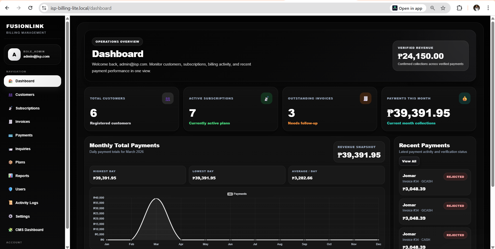

Open for internship and freelance opportunities
Hi, I’m Jomar Lacieras
Aspiring Full-Stack Developer
I build practical web systems and dashboards that solve real-world problems. I’m a Computer Engineering student with hands-on experience in full-stack development, deployment, debugging, and real-time monitoring solutions.
0
Major Systems Built
0
Core Technical Areas
0
Dedication
Featured Project
ISP Billing System with CMS (FusionLink)
A full-stack OJT project built to automate customer management, billing, payments, reports, and website content handling in one connected platform.
Real-world OJT system with billing, CMS, deployment, and administrative workflows.
This system includes an internal billing panel, a customer-facing website, and a content management module that lets administrators update content without editing code.

Experience
Hands-on development experience
My strongest experience comes from building real systems, solving deployment issues, and working on integrated web applications during my OJT and personal projects.
OJT – ISP Billing System with CMS
Full-stack development, deployment, debugging, and integration
Built and improved a complete ISP management platform with customer workflows, billing logic, content management, and Linux/Apache deployment.
Salt Production Monitoring and Estimation System
Dashboard development, real-time monitoring, and estimation logic
Designed a web-based dashboard that monitors salinity, temperature, and water level data, while estimating production output and required time.
Computer Engineering Student
Batangas State University – The National Engineering University
Continuously building technical skills in software, systems, and problem-solving through academic and project-based work.
How I Work
My development process
Understand the problem
I start by identifying the real need, expected users, and system goals.
Plan the structure
I organize the frontend, backend, database, and workflow before building.
Build the system
I implement features carefully with focus on usability and functionality.
Debug and improve
I test, troubleshoot issues, and improve performance and reliability.
Let’s Connect
Let’s build something useful together.
I’m open to internship opportunities, freelance work, and collaborative projects where I can contribute and continue growing as a developer.